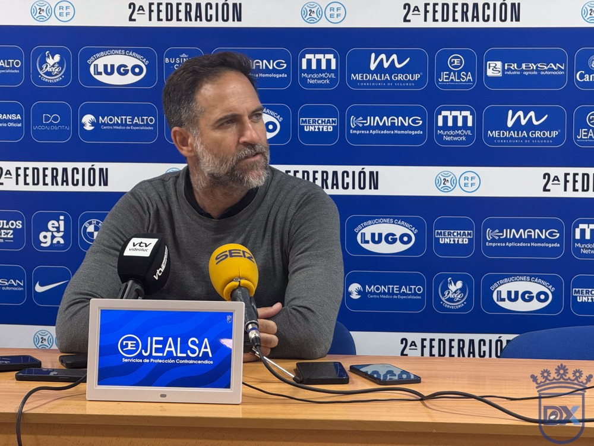

Abel Segovia: "Que los niños no tengan que ver cosas que no tienen que ver"

Foto: Diario XerecistaEl entrenador del Xerez CD pide que el derbi de Copa del Rey ante el Cádiz CF sea una fiesta del fútbol y un ejemplo para los más pequeños. Cree que su equipo puede competir ante un rival de Segunda División, anuncia cambios en el once y reconoce que le preocupa el estado del césped de Chapín.
El Xerez CD recibe este miércoles, a las 21:00, al Cádiz CF en Chapín, en una eliminatoria de Copa del Rey que ha despertado una gran expectación. En la rueda de prensa previa, Abel Segovia defendió que su plantilla tiene argumentos para medirse a un rival de mayor categoría.
Un mensaje para las dos aficiones
Segovia hizo un llamamiento a las dos hinchadas ante el lleno que se espera en las gradas: "Pido que sea una fiesta del fútbol y que demos una imagen a toda España de lo que podemos llegar a ser. Que haya cordialidad, respeto y rivalidad bien entendida. Sobre todo que los niños no vean cosas que no tienen que ver, tenemos que ser un ejemplo porque movemos a mucha gente".
La motivación, el arma del Xerez
El técnico asume que el Cádiz, que juega en Segunda División, parte como favorito. Aun así, cree que la diferencia de motivación puede igualar las fuerzas: "Hay muchas ganas e ilusión, deseando que llegue el partido para hacer las cosas bien y competir contra un gran equipo. Te enfrentas a un equipo de Segunda y para ellos venir aquí no es la motivación que tienen que tener, mientras que para nosotros es máxima. Jugar contra nuestro rival de la provincia es un escaparate para los jugadores".
Tampoco le inquieta que el ambiente pueda pesar a sus jugadores: "No me preocupa la sobreexcitación, es más, quiero que la tengamos porque al final eso te da el ánimo y la fuerza para seguir en el partido cuando te faltan las fuerzas. Sabemos a quién nos enfrentamos y lo que nos vamos a encontrar. Ojalá sea una fiesta del fútbol y que al final del partido estemos más contentos que ellos".
Cambios en el once
El Cádiz podría presentar muchas variaciones en su alineación. Segovia avanzó que él también dará oportunidades a futbolistas con menos minutos en la Liga: "Nosotros también vamos a tener cambios porque hay gente que se lo merece, que está trabajando muy bien y creo que hay que meterla. Voy a poner a los once que crea que van a competir en mejores condiciones para ir a por el partido".
Sobre el rival, que ha cambiado de entrenador, explicó cómo han preparado el partido: "Habíamos analizado al Cádiz con el anterior entrenador y hemos tenido que ver el partido del Ceuta del otro día, donde fueron capaces de sobreponerse al 0-1. Hacen bastantes cosas buenas, pero le hemos explicado a los jugadores lo que tenemos que hacer para contrarrestar sus virtudes y sacar ventaja de sus debilidades".
El césped, la gran preocupación
El terreno de juego de Chapín llega muy castigado tras varios partidos seguidos el fin de semana. Al técnico le inquieta, aunque no quiso usarlo como excusa: "El campo me preocupa, claro que sí. Somos un equipo que queremos tener la pelota, crear superioridades desde atrás y tener velocidad arriba, y si el campo está en malas condiciones nos cuesta más. El otro día hubo acciones en las que por tener que hacer un control de más dimos tiempo al contrario a posicionarse. Nos perjudica a los dos, pero no hay excusa: once contra once, el campo va a estar como tenga que estar y hay que saber qué hacer en cada momento".
"Nos está faltando acierto"
Segovia también defendió el arranque de temporada de su equipo, aunque admitió que le falta gol: "No estoy de acuerdo con que no se haya visto el verdadero potencial del equipo. Creo que hemos hecho cosas muy buenas y cada vez lo hacemos mejor, aunque nos esté faltando acierto de cara a portería. A partido único le podemos competir a cualquiera y ojalá estemos a la altura".
🇬🇧 Read in English ← Volver a la portada